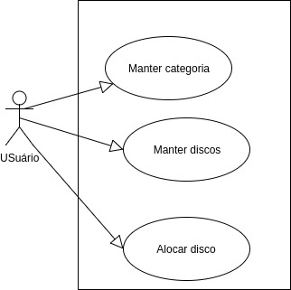
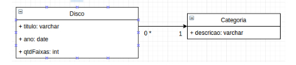
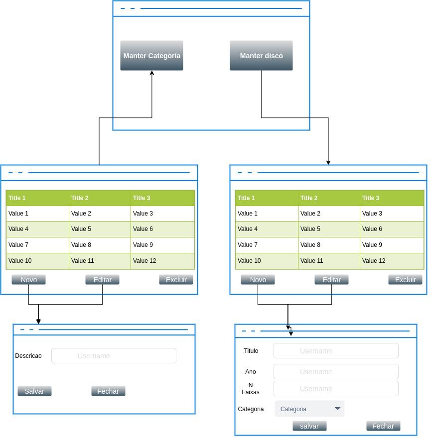

Analise de Ponto de Função
Definição
Quantificar o produto do trabalho de desenvolvimento e manutenção de sistemas no que diz respeito de funções efetivamente entregue aos usuários final, indepente da metodologia e ferramenta utilizada.
Cronologia
- 1974 GUIDE IBM
- 1979 IMB - Allan Albrecht
- 1986 IFPUG
- SPQR/20
- 1993 Function Point Workbench
Então o que é?
Define uma medida utilizada para determinar o tamanho de uma aplicação. Ela se baseia nas funções executadas pela aplicação do ponto de vista do usuário.
PREMISSAS:
- Entradas Externas
- Saídas Externas
- Arquivos Lógicos Internos
- Arquivos de interface Externa
- Consulta Externa
Entrada Externa:
Processo elementar que processa dados ou informações de controle vindos de fora da fronteira da aplicação.
Ex: Formulário de cadastros
A principal intenção de uma EE é manter um ou mais ALI e/ou alterar o comportamento do sistema.
Criação de Entradas externas vai requerer várias consultas externas (Possivelmente)
- Entrada Externa para recuperar dados do cliente.
- Entrada externa para recuperar lista de produto.
Saída Externa:
Processo elementar que gerar dados ou informações de controle que saem da fronteira da aplicação
Principal objetivo de uma SE é apresentar dados ao usuário por meio de lógica de processamento que não seja apenas recuperação de dados.
A lógica de processamento deve obrigatoriamente conter ao menos uma fórmula matemática ou cálculo, ou criar dados derivados. Pode também menter um ou mais ALI's e/ou alterar o comportamento do sistema.
Exemplos:
- Relatórios com totalização de dados.
- Relatório que também atualizam arquivos.
- Consultar com apresentação de dados derivados ou cálculos.
- Geração de arquivos de movimento para outra aplicação.
- Informações em formatos gráficos.
Não Exemplos:
- Consultas e relatórios sem nenhum totalizador, que não atualiza ALI, não tem dado derivado ou modificam o comportamento do sistema.
- Dois relatórios iguais, apenas com distinção de ordenação.
Arquivos lógicos interno:
Grupos lógicos de dados do ponto de vista do usuário cuja manutenção é feita internamente na aplicação.
Arquivos lógicos interno:
Grupos lógicos de dados que passa de uma aplicação para outra cuja manutenção pertence a outra aplicação.
Consultas externas:
Processo elementar que envia dados ou informações para fora da fronteira da aplicação.
A principal de uma CE é apresentar informação ao usuário por meio de uma simples recuperação de dados de ALI's e/ou AIE's.
Lógica de processamento não deve conter fórmula matemática ou cálculo, criar dados derivados, manter um ou mais ALI e/ou alterar o comportamento do sistema.
APF - PROCESSO
- Identificar e enumerar as funções da aplicação:
- Número de entradas externas, Saídas Externas, Arquivos lógicos internos, Arquivos lógicos de interface e Consultas externas.
- Classificar cada uma das funções identificadas ao seu nível de complexidade
- Simples, Médio ou complexo.
- Ajustar o número de pontos de funções brutos ao nível de complexidade do processamento.
APF - TABELAS
Complexidade Entrada Externa EE
| Campos | 1 à 4 itens de dados referenciados | 5 à 15 itens de dados referenciados | 16 ou mais itens de dados referenciados |
|---|---|---|---|
| 0 ou 1 tipo de arquivo referenciado | simples | simples | médio |
| 2 tipos de arquivos referenciados | simples | médio | Complexo |
| 3 ou mais tipos de arquivos referenciados | Médio | Complexo | Complexo. |
Complexidade Saída Externa SE
| Campos | 1 à 5 itens de dados referenciados | 6 à 19 itens de dados referenciados | 20 ou mais itens de dados referenciados |
|---|---|---|---|
| 0 ou 1 tipo de arquivo referenciado | simples | simples | médio |
| 2 ou 3 tipos de arquivos referenciados | simples | médio | Complexo |
| 4 ou mais tipos de arquivos referenciados | Médio | Complexo | Complexo |
Complexidade Arquivo Lógico Interno ALI
| Campos | 1 à 19 itens de dados referenciados | 20 à 50 itens de dados referenciados | 51 ou mais itens de dados referenciados |
|---|---|---|---|
| 1 tipo de registro lógico | simples | simples | médio |
| 2 à 5 tipos de registro lógico | simples | médio | Complexo |
| 6 ou mais tipos de registro lógico | Médio | Complexo | Complexo |
Complexidade Arquivo Lógico Externo AIE
| Campos | 1 à 19 itens de dados referenciados | 20 à 50 itens de dados referenciados | 51 ou mais itens de dados referenciados |
|---|---|---|---|
| 1 tipo de registro lógico | simples | simples | médio |
| 2 à 5 tipos de registro lógico | simples | médio | Complexo |
| 6 ou mais tipos de registro lógico | Médio | Complexo | Complexo |
Complexidade Consulta Externo CE
| Campos | 1 à 5 itens de dados referenciados | 6 à 19 itens de dados referenciados | 20 ou mais itens de dados referenciados |
|---|---|---|---|
| 0 ou 1 tipo de arquivo referenciado | simples | simples | médio |
| 2 ou 3 tipos de arquivo referenciado | simples | médio | Complexo |
| 4 ou mais tipos de registro lógico | Médio | Complexo | Complexo |
| Função | Nº de ocorrencia | Complexidade | Peso | Resultado |
|---|---|---|---|---|
| Entrada externa | Simples | x 3 = | ||
| Médio | x 4 = | |||
| Complexo | x 6 = | |||
| Total 1 | = | |||
| Saida externa | Simples | x 4 = | ||
| Médio | x 5 = | |||
| Complexo | x 7 = | |||
| Total 2 | = | |||
| Arquivo Lógico Interno | Simples | x 7 = | ||
| Médio | x 10 = | |||
| Complexo | x 15 = | |||
| Total 3 | = | |||
| Arquivo interface Externo | Simples | x 5 = | ||
| Médio | x 7 = | |||
| Complexo | x 10 = | |||
| Total 4 | = | |||
| Consultas | Simples | x 3 = | ||
| Médio | x 4 = | |||
| Complexo | x 6 = | |||
| Total 5 | = |
APF - Produtividade / Linguagem
APF - Ajustes
Para determinar o fator de ajuste, deves-se estimar o nível de influência para cada uma das características da aplicação relacinada abaixo:
- Comumunicação de dados
- Funções Distribuidas
- Desempenho
- Carga de configuração
- Volume de transação
- Entrada de dados online
- Eficiência do usuário final
- Atualização online
- Processameneto complexo
- Reutilização
- Facilidade de implantação
- Facilidade operacional
- Múltiplos locais
- Facildiade de mudança
0 = Não existe nenhuma influência
1 = Pouca Influencia
2 = Influência moderada
3 = Influência média
4 = Influência significativa
5 = Grande influência
APF - Fator de Ajustes
// let NI // Nível de influencia
// let fa // fator de Ajuste
// pfa // Ponde de função ajustado
let fa = 0,65 + (0,01 * NI)
let pfa = pfb * fa
Exercitar
Análise
| RF | Levantamento de requisitos |
|---|---|
| RF1 | O sistema deve permitir ao usuário manter categorias musicas. (Deve manter descrição da categorias) |
| RF2 | O Sistema deve permitir ao usuário manter discos. (Deve ser mantido o titulo do disco, ano de gravação e numero de faixas) |
| RF3 | O sistema deve permitir ao usuário alocar discos à categorias. (Um disco deve está alocado em uma categoria e uma categoria pode conter zero ou vários 'N' discos). |
Diagrama de caso de uso

Diagrama de classe

Navegabildiade

Detalhes protótipo

EE
- Incluir Categoria - simples
- Editar Categoria - simples
- Excluir Categoria - simples
- Incluir Disco - Simples
- Editar Disco - simples
- Excluir Disco - simples
6 x simples peso 3 = 18
0 x Médio peso 4 = 0
0 x Complexo peso 6 = 0
TOTAL: 18
SE
0 x simples peso 4 = 0
0 x Médio peso 5 = 0
0 x Complexo peso 7 = 0
TOTAL: 0
ALI
2 x simples peso 7 = 14
0 x Médio peso 10 = 0
0 x Complexo peso 15 = 0
TOTAL: 14
AIE
0 x simples peso 7 = 0
0 x Médio peso 10 = 0
0 x Complexo peso 15 = 0
TOTAL: 0
CE
- Pesquisar categoria - simples
- Pesquisar disco - simples
- ComboBox EditarDisco - simples
- load dados Editar categoria - simples
- load dados Editar disco - simples
5 x simples peso 3 = 15
0 x Médio peso 4 = 0
0 x Complexo peso 6 = 0
TOTAL : 15
Contando
| Função | Nº de ocorrencia | Complexidade | Peso | Resultado |
|---|---|---|---|---|
| Entrada externa | Simples | x 3 = | ||
| Médio | x 4 = | |||
| Complexo | x 6 = | |||
| Total 1 | = | |||
| Saida externa | Simples | x 4 = | ||
| Médio | x 5 = | |||
| Complexo | x 7 = | |||
| Total 2 | = | |||
| Arquivo Lógico Interno | Simples | 2 x 7 = | 14 | |
| Médio | 0 x 10 = | 0 | ||
| Complexo | 0 x 15 = | 0 | ||
| Total 3 | = | 14 | ||
| Arquivo interface Externo | Simples | 0 x 5 = | 0 | |
| Médio | 0 x 7 = | 0 | ||
| Complexo | 0 x 10 = | 0 | ||
| Total 4 | = | 0 | ||
| Consultas | Simples | x 3 = | ||
| Médio | x 4 = | |||
| Complexo | x 6 = | |||
| Total 5 | = |
//TOTAL PONTO FUNÇÃO BRUTOS 15+14+18 var pfb = 15+14+18